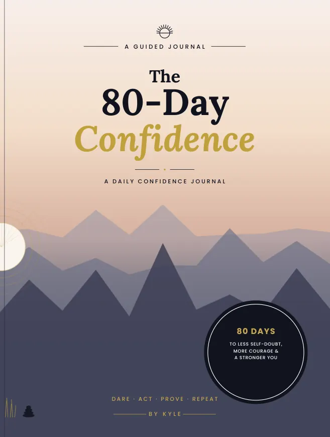
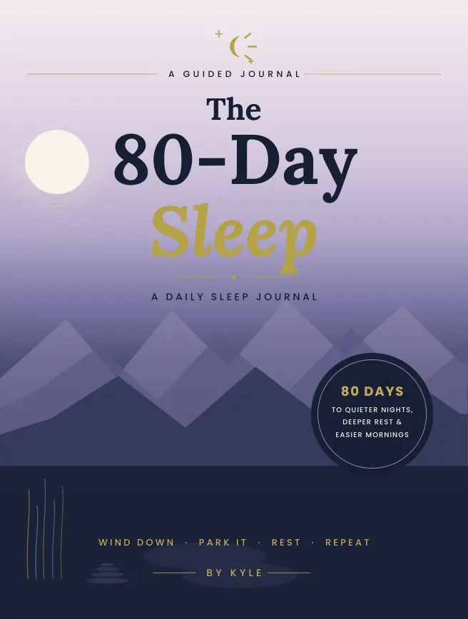

Planners & Journals
The 80-Day Confidence: A Guided Journal to Build Unshakable Self-Belief in 80 Days
A guided daily confidence journal with reflective prompts.
- Format
- Paperback
- Author
- Kyle Dyer
- Collection
- Planners & Journals
- ASIN
- B0HCM8YWYB
Buy on Amazon UK Amazon handles your order. Prices and availability may change there.
Look inside ↓Actual book pages
Look inside
Reduced-size samples from the finished interior. Tap a page for a closer look.
Keep exploring
View category ↗More from this shelf

Planners & Journals
The 80-Day Sleep
A daily journal for reflecting on bedtime and sleep habits.
See insideK.D.PUBLISHINGThe 80-Day CalmCover image pending
Planners & Journals
The 80-Day Calm
A guided daily journal with prompts for calmer moments.
See insideK.D.PUBLISHINGThe 80-Day Self-CareCover image pending
Planners & Journals
The 80-Day Self-Care
A daily journal for making space to reflect on self-care.
See inside